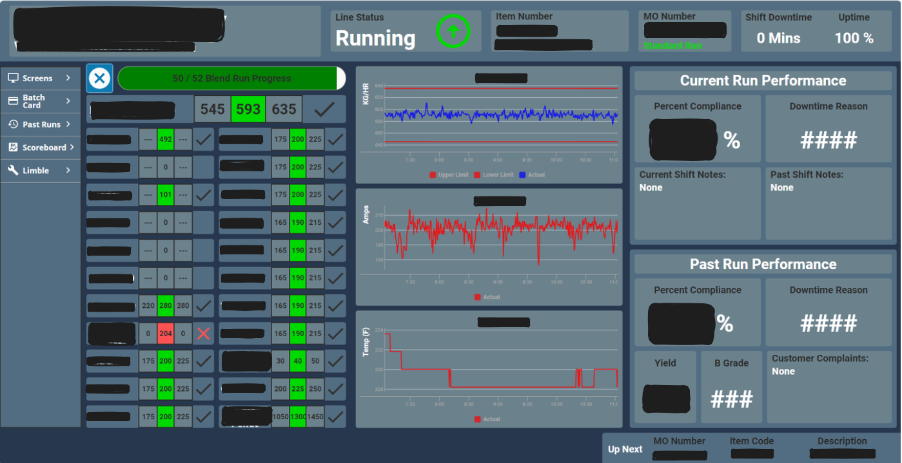

Production Monitoring & Analytics Dashboard
Real-time manufacturing visibility through interactive data visualization
Overview
This project focused on the design and implementation of an interactive production dashboard used by manufacturing teams to monitor live process data, track performance metrics, and quickly identify deviations during active production runs. The dashboard consolidated data from multiple sources into a single, operator-friendly interface, enabling faster decision-making and improved situational awareness on the production floor.
The system was developed to support both real-time monitoring and post-run performance analysis, balancing technical depth with clarity and usability for operators, supervisors, and engineers.
System Capabilities
- Displayed live production status including run state, item number, manufacturing order (MO), uptime, and downtime
- Visualized key process parameters (e.g., throughput, current, temperature) with upper and lower control limits
- Highlighted out-of-spec conditions and compliance metrics to support rapid intervention
- Provided historical context through past run performance summaries and shift notes
- Centralized critical information into a single, standardized interface to reduce operator workload
Technical Implementation
- Developed the dashboard using Inductive Automation’s Ignition Perspective platform
- Integrated live data streams from industrial control systems and plant databases
- Designed dynamic charts and indicators to update in real time with minimal latency
- Implemented structured data bindings and tag organization to ensure scalability and maintainability
- Applied UI design principles to present dense technical information in a clear, intuitive layout
User-Centered Design
- Optimized layout for at-a-glance interpretation by operators during active runs
- Used color, icons, and status indicators to communicate system health and urgency
- Reduced reliance on manual data checks by surfacing actionable information automatically
- Designed navigation to support both real-time operation and post-run review
Visuals

Tools & Skills
Tools: Ignition (Inductive Automation), SQL, Industrial Control Systems
Skills: Data visualization, real-time monitoring, manufacturing analytics, UI/UX design
My Role
As a continuous improvement engineer intern at Teknor Apex, I migrated systems to Ignition Perspective, improving mobile accessibility and reducing manual reporting overhead. I designed and deployed real-time production dashboards used by manufacturing and executive teams across multiple plants.